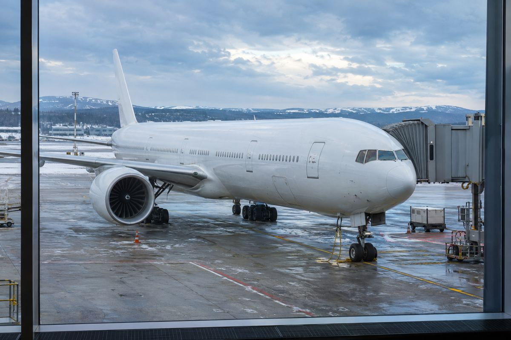

Fleet & routes / EXPLAINED
SWISS brings the A350 to Mumbai on December 15, with a schedule caveat
The Zurich–Mumbai route gains SWISS Senses cabins, but daily service will not always mean a daily A350.

SWISS will put the Airbus A350-900 on Zurich–Mumbai from December 15, it announced on November 5. A350 flights will operate daily through January 3, 2027, then on six days a week from January 4. Mumbai will still receive a daily service. Travelers choosing a date specifically for the new aircraft need to distinguish the route's frequency from the A350's frequency.
A new cabin reaches India
SWISS connects European and long-haul services through Zurich. This is an aircraft change on an established route, rather than the opening of Mumbai service. The airline says the route has mainly used A330s. The A350 brings its SWISS Senses long-haul cabin to India for the first time, including redesigned seating and larger entertainment screens. That branding does not make every seat or service identical: the booked cabin and seat map remain important.
The airline puts the Zurich-to-Mumbai flight at about eight hours ten minutes, roughly 25 minutes shorter than before. This comparison concerns that direction, not a guaranteed 50-minute saving on a return journey. SWISS cites lighter construction, engine performance and higher cruising altitude. Scheduled flying time is also different from actual arrival time. Wind, air traffic control, airport congestion and delays can change a particular flight, so onward connections should be planned around the timetable being sold.
Read aircraft and cabin together
The A350-900 is a twin-engine, long-haul widebody: a large passenger aircraft with two cabin aisles. Aircraft type helps set expectations, but airlines fit different seats and class layouts to the same model. Anyone selecting the new cabin should check both the aircraft shown in the booking and the seat-selection screen. Operational substitutions remain possible; an aircraft label is not an unconditional boarding guarantee.
For now, the deployment is planned only for the 2026/27 winter timetable. An extension into later seasons has not been confirmed. A winter announcement should therefore not be applied automatically to spring travel. For a journey from Korea via Zurich, total connection time and ticket conditions may matter more than a 25-minute change. That is an interpretation of the itinerary, not a prediction of cheaper fares.
The announcement also extends the special livery on SWISS's first A350 beyond its original deadline. No final end date is set; the regular livery will return during a scheduled repaint. This does not promise that particular aircraft on a Mumbai flight. Route deployment, individual aircraft assignment and cabin class are separate pieces of information. Travelers should check the aircraft, schedule and seat conditions sold for their actual departure.